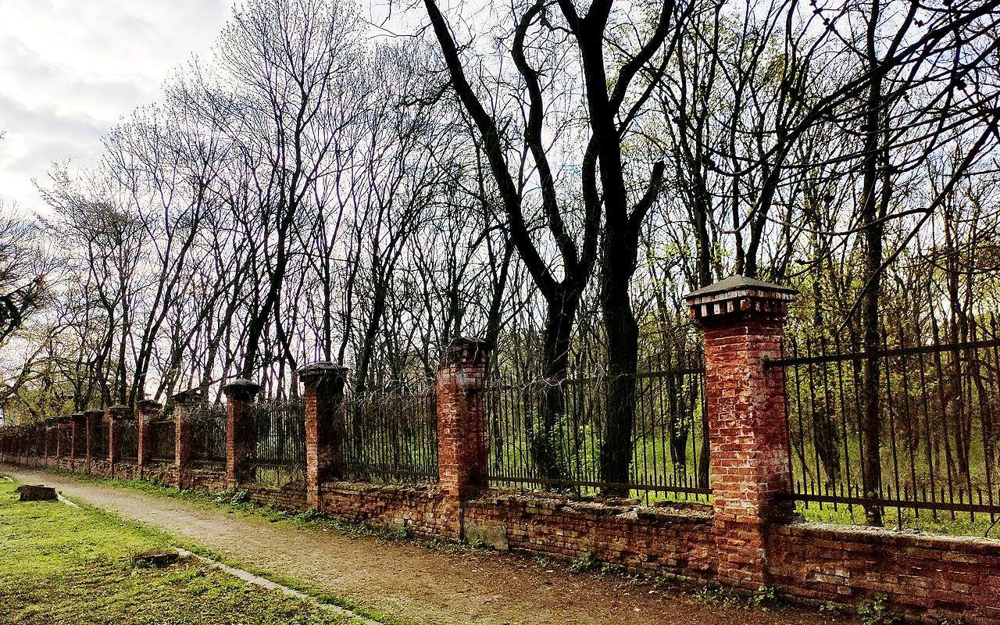
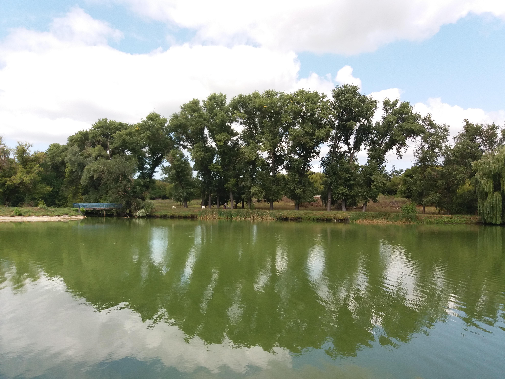

Онуфріївський дендропарк
Галерея
1 / 7

2 / 7

3 / 7

Ставок та місток на острівець
4 / 7

Випас кіз місцевих мешканців у парку
5 / 7

Арка головного в'їзду в парк
6 / 7

Ставок
7 / 7

Концертний майданчик на острівці